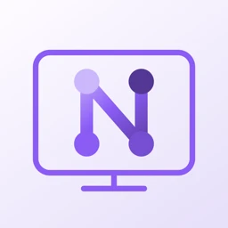
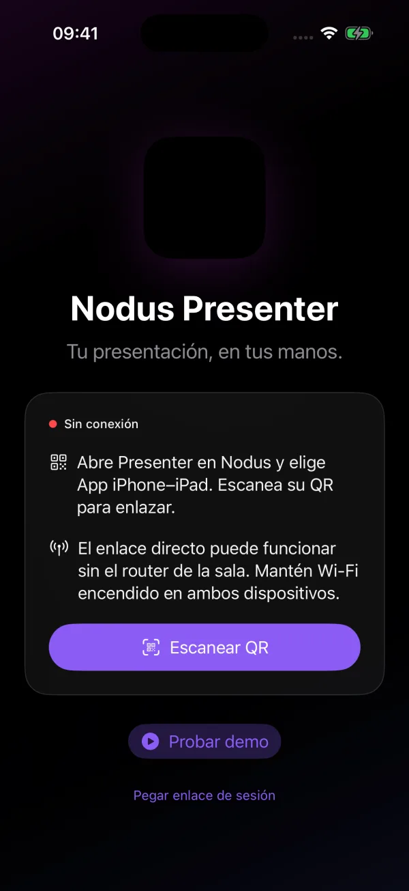
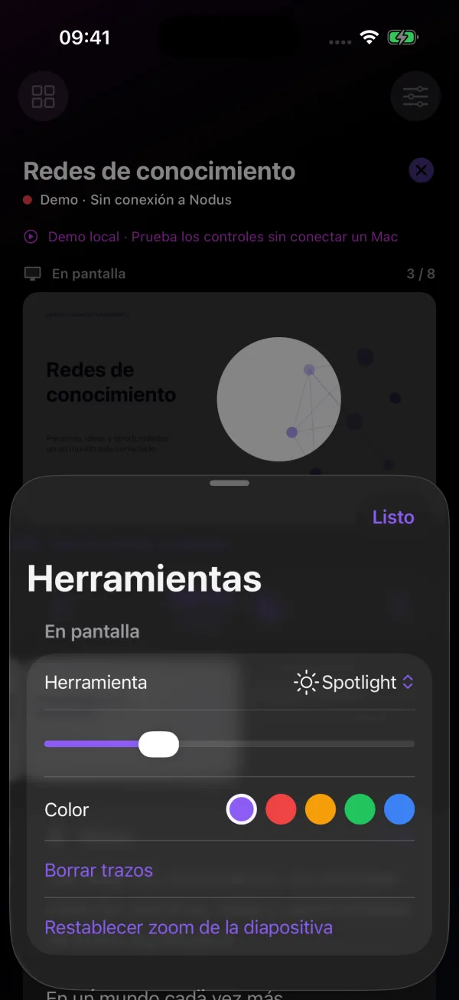

Nodus Presenter
You run the show
Nodus Presenter is the iPhone and iPad controller for Nodus Research presentations. Scan a QR code and your phone becomes your slides, your notes and your remote.
iPhone · iPad · iOS 18 or later · Pairs with Nodus Research on Mac, Windows or Linux
Part of the Nodus family · GitHub · Privacy
Pair in a second
Open the presenter in Nodus Research and scan its code. Mac pairing can use Wi-Fi peer-to-peer; Windows and Linux use the same local network.
Scan the QR code shown by Nodus Research. It carries a session key that should not be shared.
See every slide at a glance and jump to any of them from the thumbnail grid.

Your notes, your pace
The current slide, the next one and your notes in one view, with a timer you can pause and reset.
Tap or swipe to move between slides, and control what the audience sees.
Notes in their own panel, with a split you can adjust and keep.
System, light or dark, and nine accent colours.

Point, light and draw
Pointer, spotlight, drawing, magnifier and black screen. A selected tool takes your taps without changing the slide.
Spotlight and magnifier to guide the room to one detail.
Draw on the slide with your colour and size, and erase it after.
Video controls appear when a slide contains video.

Free to use. Yours to keep.
Nodus Presenter is open source under the AGPL-3.0-only licence. It talks only to the Nodus Research session it is paired with.
One family of tools for research.
Nodus Presenter is one of the free, open-source apps made by Nodus Research.